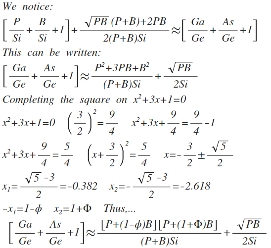

Part 4
Part 4
In my book Dynamic Structure Between AI And Biological Life, I outlined a dynamic structure between artificial intelligence and biological life and suggested that we can understand biological life by looking at artificial intelligence, and perhaps even, by doing so, discover the origins of biological life. In that work we looked at molar masses, and in this one we look at molar masses, atomic radii, and density and begin to lay a groundwork for a theory.
It is now March 17, 2019 and I guess if the Universe is to be sublime, it should be elegant, exciting and, designed with sublime aesthetics, which is what I have always done in this project, and it has always panned out, that if
has perfection in the precursors of the amino acids as

Then,...
should have perfection for some aspect of biological components. Since Ga/Ge+As/Ge+1 is approximately three, and Ga/Si+As/Si+1 is approximately 6, it is in other things. One might hazard to guess, since the former is in the amino acids, the latter will be in the sugars and the monomer of the sugars, that are a big part of the biological, ribose, deoxyribose, glyceraldehyde, and formaldehyde used to make glyceraldehyde, ribose, and DNA and RNA, the instructions for biological life. It turns out it is:
Thus, where silicon is associated with the amino acids, germanium is associated with the DNA and RNA.
We talked about the primordial precursors to the amino acids and the precursors to the sugars of RNA and DNA In their connection AI, but what about the amino acids themselves, the building blocks of life?

It becomes important to look at air as a mixture. It is about 25% oxygen gas (O2) and 75% nitrogen gas (N2) by volume, giving it an accepted value of 29.0 grams per mole (eqn 14):


